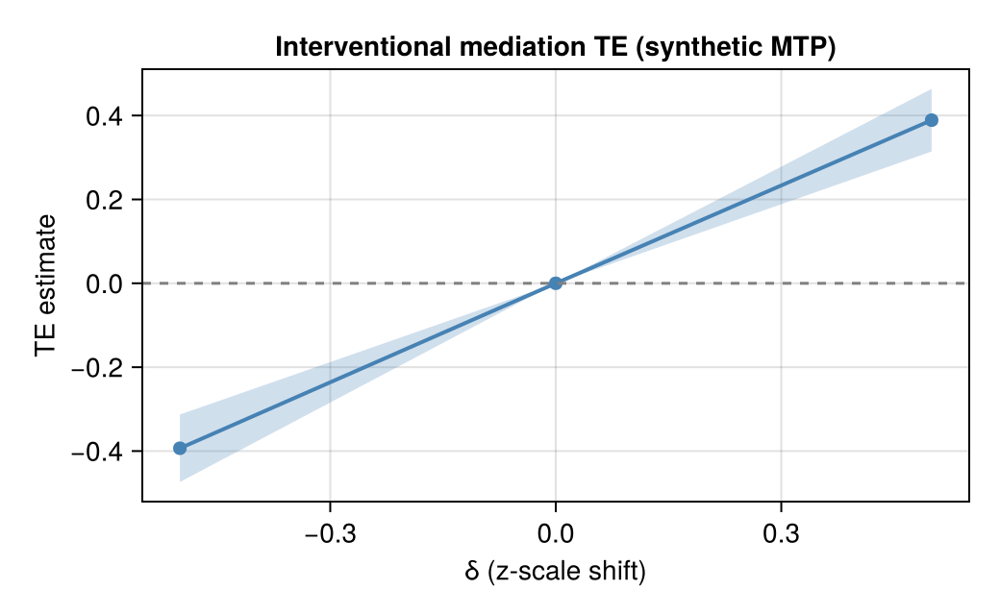

CausalMediation.jl
CausalMediation implements cross-fitted estimators for modern mediation contrasts: interventional (randomised intermediate) TE / NDE / NIE under modified treatment policies, natural and organic effects when admissible, controlled direct effects, and recanting-twin / path-specific summaries. Intermediate confounders (moc) are first-class. Defaults reuse lean Super Learner profiles from CausalTargeted.jl.
Identification is delegated to CausalDynamics.jl (MediationQuery, identify, IdentificationResult.moc). This package estimates parameters once the query, mediators, and moc are known.
Compared with R and Python
| Need | CausalMediation | Familiar elsewhere |
|---|---|---|
| Interventional TE/NDE/NIE + MTP | Yes | R crumble (effect="RI"), medoutcon |
Intermediate confounding (moc) | Yes | crumble, medoutcon, medRCT |
| Natural / organic / controlled direct | Yes | crumble "N"/"O"; VanderWeele CDE |
| Recanting-twin / path-specific | Yes (API) | crumble "RT", Vo–Díaz |
| Typed ID certificate → estimate | Unique | Partial |
| LMTP (non-mediated) | — (use CausalTargeted) | R lmtp, Ananke |
Choose CausalMediation for Julia-native mediation with shared certificates and Super Learner. Prefer crumble / medoutcon when the pipeline is already R. Details: Comparison · ECOSYSTEM_COMPARISON.md.
Related packages
| Package | Role |
|---|---|
| CausalDynamics | Graphs, MediationQuery / identify, moc on certificates |
| CausalTargeted | Super Learner, ShiftPolicy, LMTP, soft mediation façades |
| CausalMediation | Mediation EIF / one-step / TMLE / plugin grids |
| DAGMakie | Optional DAG figures |
Design notes: DESIGN.md · NAMING.md · BOUNDARIES.md · ecosystem principles.
Methods and literature
- Comparison — Julia vs R (
crumble,medoutcon,medRCT) and Python - Methods and literature — RI / natural / organic / RT / CDE, EIF,
moc - Naming — Julia symbols vs R
crumblestrings - References — bibliographic list with DOIs
Canonical sources include Vansteelandt & Daniel (2017); Díaz & Hejazi (2020); Liu et al. (2024); Vo–Díaz on recanting twins; Lok (2015) on organic effects. BibTeX keys such as diaz2020mediation live in the CDCS book references.bib.
Quick start
Continuous-exposure interventional mediation under baseline confounding (W → A → M → Y, A → Y, W → Y). Identification uses CausalDynamics; estimation uses run_mediation.
using CausalMediation, CausalTargeted, CausalDynamics, Graphs, StableRNGs
# Graph: W=1, A=2, M=3, Y=4
g = DiGraph(4)
add_edge!(g, 1, 2); add_edge!(g, 1, 3); add_edge!(g, 1, 4)
add_edge!(g, 2, 3); add_edge!(g, 2, 4); add_edge!(g, 3, 4)
names = Dict(1 => :W, 2 => :A, 3 => :M, 4 => :Y)
id = identify(
g, MediationQuery(:A, :Y, [:M]; effect_kind = :interventional);
node_names = names,
)
id.strategy, id.adjustment, id.mediators, id.moc(:mediation_interventional, [:W], [:M], Symbol[])using CausalMediation, CausalTargeted, CairoMakie, StableRNGs
df, truth = simulate_continuous_mtp_mediation(250; rng = StableRNG(20))
spec = MediationSpec(:A, :Y; mediators = [:M], covariates = [:W])
res = run_mediation(
spec, df;
deltas = [-0.5, 0.0, 0.5],
folds = 2,
n_mc = 16,
estimator = :onestep,
learners = DEFAULT_SL_LEARNERS,
parallel = false,
rng = StableRNG(21),
)
grid = res.table
te = grid[string.(grid.estimand) .== "TE", :]
fig = Figure(size = (520, 320))
ax = Axis(fig[1, 1];
xlabel = "δ (z-scale shift)",
ylabel = "TE estimate",
title = "Interventional mediation TE (synthetic MTP)",
)
band!(ax, te.delta, te.lwr, te.upr; color = (:steelblue, 0.25))
lines!(ax, te.delta, te.est; color = :steelblue, linewidth = 2)
scatter!(ax, te.delta, te.est; color = :steelblue, markersize = 10)
hlines!(ax, [0.0]; color = :gray, linestyle = :dash)
fig
With intermediate confounding, pass moc (and prefer interventional or recanting-twin effects—natural effects are refused):
spec = MediationSpec(:A, :Y; mediators = [:M], covariates = [:W], moc = [:L])Installation
Until the package is on General:
using Pkg
Pkg.add(url="https://github.com/SimonAB/CausalMediation.jl.git")
using CausalMediationAfter registration: Pkg.add("CausalMediation"). Requires Julia 1.12+, CausalDynamics 0.4+, and CausalTargeted 0.3+.
From the CDCS monorepo:
Pkg.develop(path="packages/CausalMediation.jl")See also
Worked examples appear in the CDCS book (e.g. TMLE / policy chapters). Prefer package APIs over copying application column names. LMTP without mediators remains in CausalTargeted.